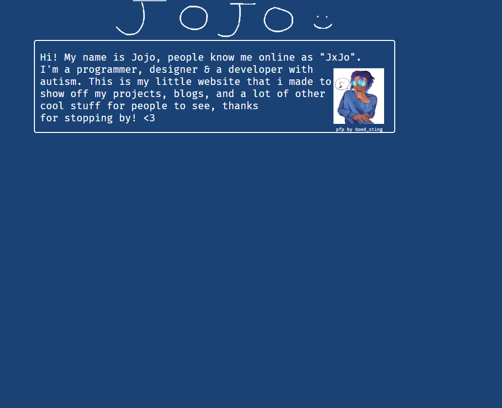
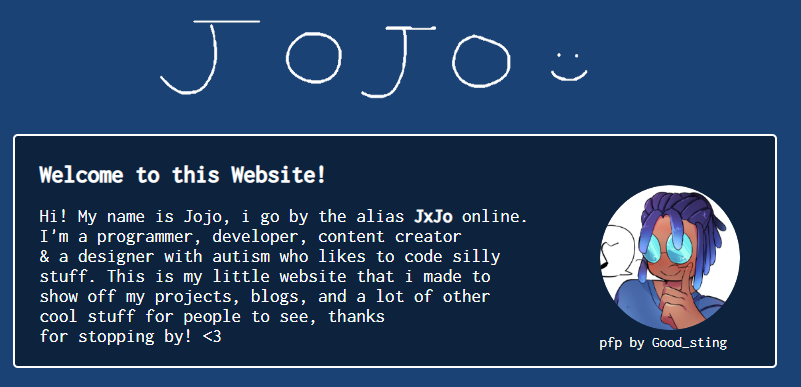
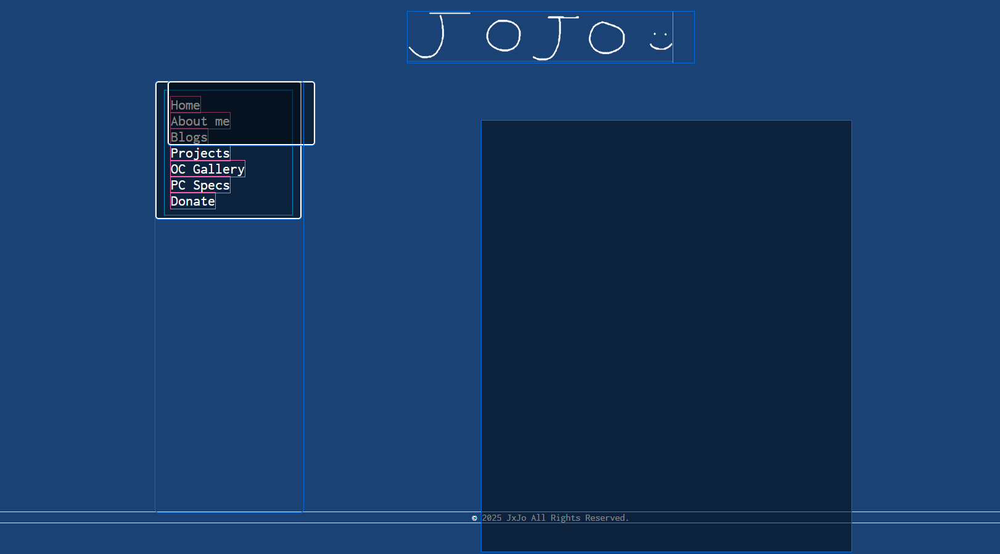
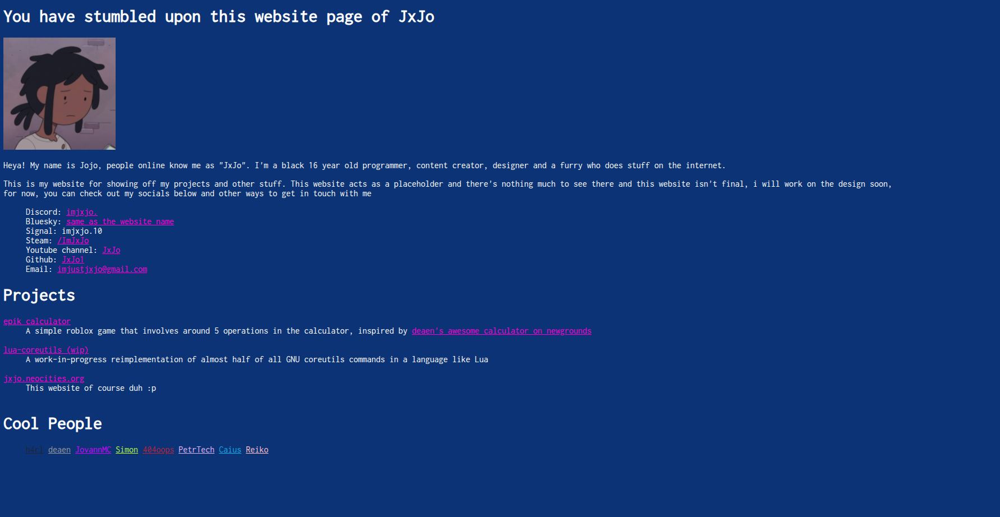

Who I am
Hey there! My name is Jojo, i'm a 16-year-old nigerian and a self-taught programmer, a content creator (sometimes), designer, and somebody who does random
stuff on the internet. I use he/they pronouns but i'm fine with any pronouns. I'm on the Autism Spectrum and i was diagnosed with ADHD (Attention Deficit Hyperactivity Disorder) at a very young age which alters the way i process things from a normal person, i hope you are patient with me!
I'm a pretty chill person who enjoys talking to people! And also someone who can sometimes be goofy and chaotic. I come off as aloof or distant,
by default, i'm usually a quiet and a reserved person especially in conversations, i also tend to be an observer or a "lurker" as people say
about me in most conversations, sometimes i can be a socially awkward person and a heavy enjoyer of silence. Other than that, i am willing to make friends and meet with new people, i will suck at starting conversations first but i'll try :')
Why I Made This Website
Back in 2022 when i was just learning how html & css works, i always wanted my own portfolio so i made a website with plain html and css, it wasn't public but it was made as practice. I looked for other ways to put my portfoilo publicly when i found the portofilo builder called bento.me (now linktree), i had one previously for a while until the service shutdown (rip). In 2025, i came back to the idea of making my own website and originally, the draft design looked like these images, i know they look bland and boring but this was what the website was supposed to look like originally. Originally when i was making the website and uploaded it to neocities for the first time, it looked like this in the fourth image. I took inspiration from other neocities and nekoweb websites and decided to create my own!




I also made this website as something that i'm passionate about, i always wanted to be creative with things and i didn't want this website to look like those "soulless corporate next js slop" websites or just modern web designs in general so i decided to balance it by adding whimsy and putting a lot of creativeness to it while using this website as a way to share my work and other cool & niche stuff for people to see.
The website's code is avaliable here on my Github repository. Feel free to explore the repository and roast my spaghetti code! Please note that there are still some parts of this website that are incomplete or a mess, i do gotta warn that it's not mobile friendly yet, in future redesigns of this website i'll make it more mobile-friendly.
Hobbies
In my free time, i like to code random things, experiment with things and make things work. I started writing code around 9 years old when my dad got me a coding tutor for
python and javascript, and during the time of those sessions i started to enjoy the idea of being able to solve problems when writing code, i also found writing stuff and telling the computer exactly what you want it to do really fun, so as a result, it became my hobby and passion. Nowadays, i write code almost everyday and work on projects that i love. I'm willing to pursue in a Computer Science degree after high school but i will see what the future of this major holds for me.
Outside of computer related things... I like to do other things in my free time and my hobbies consist of:
- Watching movies, tv shows & anime
- Reading
- Cooking (i've been getting into it lately and it's fun!)
- Playing video games
- Taking long walks and exercising
Tools & Devices I Use
Programming
For programming lanaguages, i'm proficient in the following languages but i'm still learning and picking up some:
- Python
- Lua (i mainly picked this langauge up mainly from roblox's Luau language, but since i stopped being a developer a while ago, i used standard Lua)
- Javascript & Typescript
- Go (learning)
- C++ (learning)
I use VSCodium as my primary editor to write code. I use Arc Reversed from Bearded Themes as a theme and Hack Nerd Font as my font.
Software
- Internet & Chat: Vivaldi (browser), Helium (browser), Discord (Vesktop), Signal, nheko & FluffyChat (matrix client), Betterbird (email)
- Game Launchers: Steam, Prism Launcher (Minecraft)
- Music: Spotify (with spicetify)
- Creativity: Krita, Davinci Resolve (video editor), Audacity (audio recording and editing)
- Misc: Moonlight & Sunshine (remote desktop), Parsec (remote desktop), Bitwarden (password manager), Ente Auth (authenticator), Proton VPN (VPN), OpenRGB (peripherals and rgb), Piper (logitech mouse), Flameshot & Spectacle (screenshotting), Filezilla (file transfer), Sourcegit & Github Desktop (git client)
- Operating System: Fedora Linux 44
Computer Specifications
- Laptop: HP Pavilion 15 Gaming
- CPU: Ryzen 5 4600H
- RAM: 16GB DDR4 2667mHz
- GPU: GTX 1050 3GB
- Storage: Western Digital PC SN530 256GB NVMe SSD (primary), Sandisk Ultra 3D SSD 1TB (secondary)
Peripherals
- Mouse: Logitech G502 Hero
- Keyboard: Razer Huntsman TE
- Mousepad: Lenovo Legion Control XXL
- Headphones: Astro A10
- Microphone: Razer Seiren Mini
- Monitor: MSI G241 24" 144hz 1080p
- Mouse Bungee: Razer Mouse Bungee V3 Chroma
Other Devices
- Consoles: Nintendo Switch v1 (hacked), PlayStation 5
- Monitor: LG 27MP400-B 27" 1080p
- Controllers: Dualshock 4, DualSense Controller
- Speakers: Motorola Sonic Play+ 275, Amazon Echo Dot (second generation)
I'll add more stuff and update this section soon if i feel like it :p